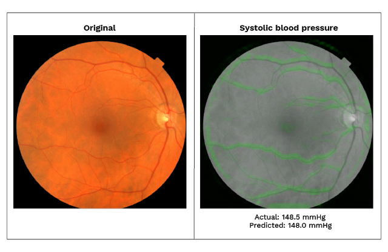

1 Principles of Data Science
“If you tell me precisely what it is a machine cannot do, then I can always make a machine which will do just that.”
When you open an Amazon page there are many personal suggestions of goods to purchase. By analyzing previous product pages visited and purchases made by you and other people who have bought similar products Amazon uses AI and machine learning to predict what would of interest to you next time you shop.
When you apply for a loan online, you typically get an immediate answer after filling an application. The information you provide, combined with your credit history pulled from a credit history bureau is used by a predictive model which can tell with high level of confidence whether you are to default on the loan or not.
You might ask, what is common among one of the most successful Internet retail company, finance industry and a phenomenal baseball team? All of these decisions use AI and methods of predictive analytics to improve the operations. They used historical observations combined with rigorous statistical analysis and efficient computer algorithms to predict future outcomes and change the decisions. The ability to collect and analyze complex data sets has been a prerogative of a small number of people for many year. It vital to have experience in data engineering, statistics, machine learning and probability. A data scientists has all of those skills. Current tools developed by industry and academic institutions makes data science profession accessible to a wider audience without requiring a training in a specific technical filed.
Over the past decade, there has been an explosion of work, mostly applied, on deep learning. Applications of deep learning are everywhere. The main reason for this is that large Internet companies such as Google, Facebook, Amazon and Netflix increasingly displace traditional statistical and machine learning methods with deep learning techniques. Though, such companies are at the frontier of applying deep learning, virtually any industry can be impacted by applying deep learning (DL).
Data Science is a relatively new field that refers to sets of mathematical and statistical models, algorithms, and software that allow extracting patterns from data sets. The algorithms are the adoptions of applied mathematics techniques to specific computer architectures and the software implements those algorithms.
Predictive analytics applies AI models to design predictive rules which then can be used by engineers and business for forecasting or what-if analysis. For example, a company that is interested in predicting sales as a result of advertisement campaign would use predictive model to identify the best way to allocate its marketing budget or a logistics company would use a predictive model to forecast demand for shipments to estimate the number of drivers it would need in the next few months.
Artificial Intelligence has been around for decades. In fact the term AI was coined by a famous computer scientist John McCarthy in 1955. While being tightly connected to the field of robotics for many years, the AI concepts are widely applicable in other fields, including predictive analytics. Currently, the AI is understood as a set of mathematical tools that are used to develop algorithms that can perform tasks, typically done by humans, for example, drive a car or schedule a doctor’s appointment. This set of mathematical tools include probabilistic models, machine learning algorithms and deep learning. The previous successful applications included the victory of IBM’s DeepBlue over then world champion Garry Kasparov in 1997. In 2004 a self driving vehicles that participated in Darpa’s grand challenge drove 150 miles through the Mojave Desert without human intervention.


Tree search algorithms were developed by DeepBlue engineers to implement the chess robot. A modification was the addition of heuristics to cut branches of the tree that would not lead to a win. Those heuristics were designed by chess grand masters based on their intuition and previous experience. Vehicles in grand challenge also relied on traditional techniques such as Kalman filters and PID (proportional-integral-derivative) controllers that have been in use for many years.
Two distinguishing features of AI algorithms:
Algorithms typically deal with probabilities rather than certainties.
There’s the question of how these algorithms “know" what instructions to follow.
A major difference between modern and historical AI algorithms is that most of the recent AI approaches rely on learning patterns from data. For example, DeepBlue algorithm was “hardcoded” and the human inputs were implemented as if-then statements by the IBM engineers. On the other hand, modern AlphaGo zero algorithm did not use any human inputs whatsoever and learned optimal strategies from a large data sets generated from self-plays. Although handcrafted systems were shown to perform well in some tasks, such as chess playing, the are hard to design for many complex applications, such as self-driving cars. On the other hand large data sets allow us to replace set of rules designed by engineers with a set of rules learned automatically from data. Thus, the learning algorithms, such as deep learning are at the core of the most of modern AI systems.
The main driving factor behind the growth of modern AI applications is the availability of massive and often unstructured data sets. Om the other hand, we now have appropriate computing power to develop computationally intensive AI algorithms. The three main modern AI enablers are:
Moore’s law: Decades-long exponential growth in the speed of computers (Intel, Nvidia)
New Moore’s law: Explosive growth in the amount of data, as all of humanity’s information is digitized
Cloud-computing (Nvidia, Google, AWS, Facebook, Azure)
Fitting complicated models to describe complicated patterns without overfitting requires millions or billions of data points. Two key ideas behind pattern-recognition systems are
in AI, a “pattern” is a prediction rule that maps an input to an expected output
“Learning a pattern” means fitting a good prediction rule to a data set
In AI, prediction rules are often referred to as “models”. The process of using data to find a gooo prediction rule is often called “training the model”. With millions (or billions) of datapoints and fast pattern-matching skills, machines can find needles in a haystack proving insights for human health, transportation, ... etc.
Machine learning (ML) arises from this question: could a computer go beyond “what we know how to order it to perform” and learn on its own how to perform a specified task? Could a computer surprise us? Rather than programmers crafting data-processing rules by hand, could a computer automatically learn these rules by looking at data? This question opens the door to a new programming paradigm. In classical programming, the paradigm of symbolic AI, humans input rules (a program) and data to be processed according to these rules, and out come answers. With machine learning, humans input data as well as the answers expected from the data, and out come the rules. These rules can then be applied to new data to produce original answers.
A machine-learning system is trained rather than explicitly programmed. It’s presented with many examples relevant to a task, and it finds statistical structure in these examples that eventually allows the system to come up with rules for automating the task. For instance, if you wished to automate the task of tagging your vacation pictures, you could present a machine-learning system with many examples of pictures already tagged by humans, and the system would learn statistical rules for associating specific pictures to specific tags.
Although machine learning only started to flourish in the 1990s, it has quickly become the most popular and most successful subfield of AI, a trend driven by the availability of faster hardware and larger datasets. Machine learning is tightly related to mathematical statistics, but it differs from statistics in several important ways. Unlike statistics, machine learning tends to deal with large, complex datasets (such as a dataset of millions of images, each consisting of tens of thousands of pixels) for which classical statistical analysis such as Bayesian analysis would be impractical. As a result, machine learning, and especially deep learning, exhibits comparatively little mathematical theory—maybe too little—and is engineering oriented. It’s a hands-on discipline in which ideas are proven empirically more often than theoretically.
Deep learning DL is a type of machine learning which performs a sequence of transformations (filters) on a data. Output of each of those filters is called a factor in traditional statistical language and hidden feature in machine learning. Word deep means that there is a large number of filters that process the data. The power of this approach comes from the hierarchical nature of the model.
The three main factors driving AI are:
Massive Data
Trial and Error. A Billion Times per Second (Chess, Go)
Deep Learning Pattern Recognition
The widespread of mobile phones leads to generation of vast amounts of data. Besides images, users generate space and time trajectories, which are currently used to estimate and predict traffic, text messages, website clicking patterns, etc.
Deep learning with many successful applications, has been frequently discussed in popular media. The popularity of the topic has led to hype people tend to think that deep learning techniques are capable to replace many of the human tasks, such as medical diagnostics, accountings. On the pessimistic side, people think that after a short hype, the DL techniques will disappoint and companies will stop funding R&D work on its development. However, the research on pushing this filed further is slow and it will take time before deep learning penetrates a wide range of industries. At any rate, the demand for data scientists in general and AI specialists has been increasing over the last few years with biggest markets being on silicon valley, NYC and Washington, DC(indeed 2018).
The field of predictive analytics was popularized by many famous competitions in which people compete to build the model with lowest prediction error. One of the first of this types of competitions was the Netflix prize. In 2009 Netflix payed $1 million to a team that developed the most accurate model for predicting movies a user would like to watch. At that time Netflix’s recommendation system generated 30 billion predictions per day. The initial goal of improving recommendation algorithm by 10 percent was overachieved by the winning team. The wining team used what is called an ensemble technique, which takes a weighted average from different prediction algorithms. Thus, the first lesson from this competition is that we typically need to build several predictive models to achieve a good results. On the other had, the model developed by the winning team was never used by Netflix due to complexity of those models and the fact that by the end of competition Netflix mostly shifted to streaming movies versus sending DVDs over mail. The second lesson is that simplicity and interpretability of models matters when they are deployed on a large scale. The third lesson, is that models need to adapt accordingly to meet the fast changing business requirements.
Deep Learning’s (DL) growing popularity is summarized by the grown of products that Google is developing using DL. Figure 1.3 shows this immense growth. One key differentiating effect is that DL algorithms are scalable and can be implemented across the interned in apps such as YouTube and Gmail.

Applications of Machine Learning/Deep Learning are endless, you just have to look at the right opportunity! There is a similar dynamics in popularity of deep learning search queries on Google. The growth is again exponential, although it is not yet close to popularity of traditional statistical techniques, such as linear regression analysis.
Meanwhile, some ethical concurs are being raised as a result of growing popularity of AI. The most discussed thus far is the impact on the job market and many jobs being replaced by deep learning models. Although, some economic analysis (Acemoglu and Restrepo 2018) shows that while jobs displacement leads to reduced demand for labor and wages, it counteracted by a productivity effect and increases in demand for labor in non-automated tasks.
The algorithmic aspects of deep learning has existed for decades. In 1956, Kolmogorov has shown that any function can be represented as a superposition of univariate functions (this is exactly what deep learning does). In 1951 Robbins and Monro proposed stochastic approximations algorithms. This is the main technique for finding weights of a deep learning model today.
Backpropagation algorithm for finding derivatives was first published and implemented by Werbos in 1974. In mid 1980s Schmidhuber studied many practical aspects of applying neural networks to real-life problems. Since the key ingredients of DL has been around for several decades, one could wonder why we observe a recent peak in popularity of those methods.
One of the strong driving forces is adoption of DL by internet companies that need to analyze large scale high dimensional datasets, such as human-written text, speech and images. Smartphone photography led to people uploading vast amounts of images to services like Instagram and Facebook. In 2012 more mobile devices were sold than PCs. The number of images shared on the Internet has skyrocketed as well. This can be see in products that Google is developing using DL.
Worldbank estimates that by 2020 there will be more than 4 billion mobile phone users, slightly less than literate adults on the planet.
Therefore, data generated by Internet users creates a demand for techniques to analyze large scale data sets. Mathematical methodologies were in place for many years. One missing ingredient in the explosive nature of DL popularity is the availability of computing power. DL models are computationally hungry, trial and error process is required to build a useful model. Sometimes hundreds or thousands of different models are required to be evaluated before choosing one to be used in an application. Training models can be computationally expensive, we are usually talking about large amounts of training data that need to be analyzed to build a model.
Popularity of gaming led to large amount of investments into development of fast processors that can render high quality images in real time.
The mathematical operations used for manipulating and rendering images are the same as those used in deep learning models. Researchers started to used graphical processing units (GPUs) (a.k.a graphics cards) to train deep learning models in 2010s. The wide availability of GPUs made deep learning modeling accessible for a large number of researchers and engineers and eventually led to popularity of DL. Recently, several competitive hardware architectures were developed by large companies like Google, which uses its own TPU (Tensor Processing Units) as well as smaller start-ups.
This course will focus on practical and theoretical aspects of predicting using deep learning models. Currently, deep learning techniques are almost exclusively used for image analysis and natural language processing and are practiced by a handful number of scientists and engineers with most of them being trained in computer science. However, modern methodologies, software and availability of cloud computing make deep learning accessible to a wide range of data scientists who would typically use more traditional predictive models such as generalized linear regression or tree-based methods.
A unified approach to analyze and apply deep learning models to a wide range or problems that arise in business and engineering is required. To make this happen, we will bring together ideas from probability and statistics, optimization, scalable linear algebra and high performance computing. Although, deep learning models are very interesting to study from methodological point of view, the most important aspect of those is the predictive power unseen before with more traditional models. Ability to learn very complex patterns in data and generate accurate predictions make the deep learning a useful and exciting methodology to use, we hope to convey that excitement. This set of notes is self-contained and has a set of references for a reader interested in learning further.
Although basics of probability, statistics and linear algebra will be revisited, it is targeted towards students who have completed a course in introductory statistics and high school calculus. We will make extensive use of computational tools, such as R language, as well as PyTorch and TensorFlow libraries for predictive modeling, both for illustration and in homework problems.
There are many aspects of data analysis that do not deal with building predictive models, for example data processing and labeling can require significant human resources(Hermann and Balso 2017; Baylor et al. 2017).
1.1 Examples of AI Applications
Example 1.1 (ChatGPT and Lanuage Models)
Example 1.2 (Updating Google Maps with Deep Learning and Street View.) Every day, Google Maps provides useful directions, real-time traffic information and information on businesses to millions of people. In order to provide the best experience for our users, this information has to constantly mirror an ever-changing world. While Street View cars collect millions of images daily, it is impossible to manually analyze more than 80 billion high resolution images collected to date in order to find new, or updated, information for Google Maps. One of the goals of the Google’s Ground Truth team is to enable the automatic extraction of information from our geo-located imagery to improve Google Maps.
(Wojna et al. 2017), describes an approach to accurately read street names out of very challenging Street View images in many countries, automatically, using a deep neural network. The algorithm achieves 84.2% accuracy on the challenging French Street Name Signs (FSNS) dataset, significantly outperforming the previous state-of-the-art systems. Further, the model was extended to extract business names from street fronts.
Another information that researchers were able to extract from street view is political leanings of a neighborhood based on the vehicles parked on its streets. Using computer algorithms that can see and learn, they have analyzed millions of publicly available images on Google Street View. The researchers say they can use that knowledge to determine the political leanings of a given neighborhood just by looking at the cars on the streets.
Example 1.3 (CNN for Self Driving Car) A convolutional neural network (CNN) is a particular neural network architecture that can be trained to map raw pixels from a single front-facing camera directly to steering commands(Bojarski et al. 2016). This end-to-end approach proved surprisingly powerful. With minimum training data from humans the system learns to drive in traffic on local roads with or without lane markings and on highways. It also operates in areas with unclear visual guidance such as in parking lots and on unpaved roads. The system automatically learns internal representations of the necessary processing steps such as detecting useful road features with only the human steering angle as the training signal. We never explicitly trained it to detect, for example, the outline of roads.
Compared to explicit decomposition of the problem, such as lane marking detection, path planning, and control, our end-to-end system optimizes all processing steps simultaneously. We argue that this will eventually lead to better performance and smaller systems. Better performance will result because the internal components self-optimize to maximize overall system performance, instead of optimizing human-selected intermediate criteria, e.g., lane detection. Such criteria understandably are selected for ease of human interpretation which doesn’t automatically guarantee maximum system performance. Smaller networks are possible because the system learns to solve the problem with the minimal number of processing steps.
An NVIDIA DevBox and Torch 7 were used for training and an NVIDIA Drive PX self-driving car computer also running Torch 7 for determining where to drive. The system operates at 30 FPS.

Example 1.4 (Predicting Heart disease from eye images) Scientists from Google’s health-tech subsidiary Verily have discovered a new way to assess a person’s risk of heart disease using machine learning(Poplin et al. 2018). By analyzing scans of the back of a patient’s eye, the company’s software is able to accurately deduce data, including an individual’s age, blood pressure, and whether or not they smoke. This can then be used to predict their risk of suffering a major cardiac event — such as a heart attack — with roughly the same accuracy as current leading methods.
To train the algorithm, Verily’s scientists used machine learning to analyze a medical dataset of nearly 300,000 patients. This information included eye scans as well as general medical data. As with all deep learning analysis, neural networks were then used to mine this information for patterns, learning to associate telltale signs in the eye scans with the metrics needed to predict cardiovascular risk (e.g., age and blood pressure).

When presented with retinal images of two patients, one of whom suffered a cardiovascular event in the following five years, and one of whom did not, Google’s algorithm was able to tell which was which 70 percent of the time. This is only slightly worse than the commonly used SCORE method of predicting cardiovascular risk, which requires a blood test and makes correct predictions in the same test 72 percent of the time.
Example 1.5 (Painting a New Rembrandt) A new Rembrandt painting unveiled in Amsterdam Tuesday has the tech world buzzing more than the art world. “The Next Rembrandt," as it’s been dubbed, was the brainchild of Bas Korsten, creative director at the advertising firm J. Walter Thompson in Amsterdam.
The new portrait is the product of 18 months of analysis of 346 paintings and 150 gigabytes of digitally rendered graphics. Everything about the painting — from the subject matter (a Caucasian man between the age of 30 and 40) to his clothes (black, wide-brimmed hat, black shirt and white collar), facial hair (small mustache and goatee) and even the way his face is positioned (facing right) — was distilled from Rembrandt’s body of work.
“A computer learned, with artificial intelligence, how to re-create a new Rembrandt right eye," Korsten explains. "And we did that for all facial features, and after that, we assembled those facial features using the geometrical dimensions that Rembrandt used to use in his own work." Can you guess which image was generated by the algorithm?

Example 1.6 (Learning Person Trajectory Representations for Team Activity Analysis) Activity analysis in which multiple people interact across a large space is challenging due to the interplay of individual actions and collective group dynamics. A recently proposed end-to-end approach(Mehrasa et al. 2017) allows for learning person trajectory representations for group activity analysis. The learned representations encode rich spatio-temporal dependencies and capture useful motion patterns for recognizing individual events, as well as characteristic group dynamics that can be used to identify groups from their trajectories alone. Deep learning was applied in the context of team sports, using the sets of events (e.g. pass, shot) and groups of people (teams). Analysis of events and team formations using NHL hockey and NBA basketball datasets demonstrate the generality of applicability of DL to sports analytics.
When activities involve multiple people distributed in space, the relative trajectory patterns of different people can provide valuable cues for activity analysis. We learn rich trajectory representations that encode useful information for recognizing individual events as well as overall group dynamics in the context of team sports.

Example 1.7 (Google Energy) In 2016 Google’s DeepMind has published a white paper outlining their approach to save energy in data centers. Reducing energy usage has been a major focus for data center operators over the past 10 years. Major breakthroughs, however, are few and far between, but Google managed to reduce the amount of energy used for cooling by up to 40 percent. In any large scale energy-consuming environment, this would be a huge improvement. Given how sophisticated Google’s data centers are, even a small reduction in energy will lead to large savings. DeepMind used a system of neural networks trained on different operating scenarios and parameters within our data centres, we created a more efficient and adaptive framework to understand data centre dynamics and optimize efficiency.
To accomplish this, the historical data that had already been collected by thousands of sensors within the data centre – data such as temperatures, power, pump speeds, setpoints, etc. – was used to train an ensemble of deep neural networks. Since the objective was to improve data centre energy efficiency, the model was trained on the average future PUE (Power Usage Effectiveness), which is defined as the ratio of the total building energy usage to the IT energy usage. Two ensembles of deep neural networks were developed to predict the future temperature and pressure of the data centre over the next hour. The purpose of these predictions is to simulate the recommended actions from the PUE model, to ensure that we do not go beyond any operating constraints.
The graph below shows a typical day of testing the model on an actual data center, including when we turned the machine learning recommendations on, and when we turned them off.
DL system was able to consistently achieve a 40 percent reduction in the amount of energy used for cooling, which equates to a 15 percent reduction in overall PUE overhead after accounting for electrical losses and other non-cooling inefficiencies. It also produced the lowest PUE the site had ever seen.
Example 1.8 (Chess and Backgammon) Game of Chess is the most studied domain in AI. Many bright minds attempted to build an algorithm that can beat a human master. Both Alan Turing and John von Neuman, who are considered as pioneers of Ai developed Chess algorithms. Historically, highly specialized systems, such as IBM’s Deep Blue have been successful in chess. Most of those systems are based on alpha-beta search, handcrafted by human grand masters. Human inputs are used to design game-specific heuristics that allow to truncate moves which are unlikely to lead to a win.
Recent implementations of chess robots rely on deep learning models. (Silver et al. 2017) shows a simplified example of a binary-linear value function \(v\), which assigns a numeric score to each board position \(s\). The value function parameters \(w\) are estimated from outcomes of a series of self-play and is represented as dot product of a binary feature vector \(x(s)\) and the learned weight vector \(w\): e.g. value of each piece. Then, each future position position is evaluated by summing weights of active features.

Before deep learning models were used for Go and Chess, IBM used those to develop a backgammon robot, which they called TD-Gammon(Tesauro 1995). TD-Gammon uses a deep learning model as as a value function which predicts the value, or reward, of a particular state of the game for the current player.

Example 1.9 (Alpha Go and Move 37) One of the great challenges of computational games was to conquer the ancient Chinese game of Go. The number of possible board positions is \(10^{960}\) which prevents us from using a tree search algorithms as it was done with chess. There are only \(10^{170}\) possible chess positions. Alpha Go uses 2 deep learning neural networks to suggest a move and to evaluate a position:
Policy network: Move recommendation
Value network: Current evaluation (who will win?)
The policy network was initially trained with supervised learning with data feed from human master games. Then, trained in unsupervised mode by playing against itself. Train value network based on outcome of games. A key trick is to reduce breadth of search space by only considering moves recommended by policy network. The next advance is to reduce depth of search space by replacing search space sub trees with a single value created by the value network
The game is played by performing a Monte Carlo tree search which we illustrate in @(fig:mctree)
Traverse tree using highest recommended moves that haven’t been picked yet
Expand leaf node and evaluate with both policy and value networks
Back up through the tree and store mean evaluation at each node of its leaf nodes
AlphaGo won 4-1 vs. Lee Sedol, but the loss was informative.
AlphaGo Zero is the next iteration of the algorithm that remove all human knowledge from training process no human data - only uses self play no human features - only takes raw board as input single neural network - combine policy and value networks into a single network simpler search - no randomized monte-carlo rollout - only use NN evaluation

Example 1.10 (Game of Thrones) An fan of HBO’s Game of Thrones saga who could not wait till the next chapter of the A Song of Ice and Fire book it is based on comes out, used a deep learning model to generate one. He used recurrent neural networks which were trained on the previous chapters. First, each of the 32,000 unique words in the text were enumerated and then machine learned some plot points and was able to generate new patterns of text.
In August 2023, George R.R. Martin, author of the “A Song of Ice and Fire” series that inspired Game of Thrones, joined a lawsuit against OpenAI, the creator of ChatGPT. The lawsuit alleges that OpenAI used copyrighted material from the New York Times, including articles about Game of Thrones, to train its AI models without permission. While not directly about the show itself, Martin’s involvement draws a connection due to his authorship of the source material. Here is the reply ChatGPT 4.0 gives for the Can you tell about lawsuit related to Game of Thrones? query.
“In September 2023, a class-action lawsuit was filed against OpenAI by George R.R. Martin, the author of”Game of Thrones”, along with other best-selling authors like John Grisham and Jodi Picoult. The lawsuit, organized by the Authors Guild, accuses OpenAI of using their copyrighted works without permission to train its AI chatbot, ChatGPT. The authors argue that this constitutes “systematic theft on a mass scale,” and they are concerned that such use of their works by AI could endanger their ability to make a living from their writings.
The lawsuit was filed in the U.S. District Court for the Southern District of New York, alleging “flagrant and harmful infringements” of the plaintiffs’ registered copyrights. The authors are seeking a ban on the use of copyrighted books to develop language models without express authorization, as well as damages.
OpenAI, in response to similar lawsuits, has claimed that their use of training data scraped from the internet qualifies as fair use under US copyright law. They have stated that they respect the rights of writers and are having productive conversations with creators, including the Authors Guild, about how they can benefit from AI technology.
This legal action is part of a broader trend where artists, writers, and coders are raising concerns and taking legal action against AI companies for using their work without permission. These cases are bringing attention to the complex issues surrounding AI and copyright, especially as AI technologies become more advanced and widespread in their applications.”